od Command-Event do Fluent Method Chaining i Monad w C#
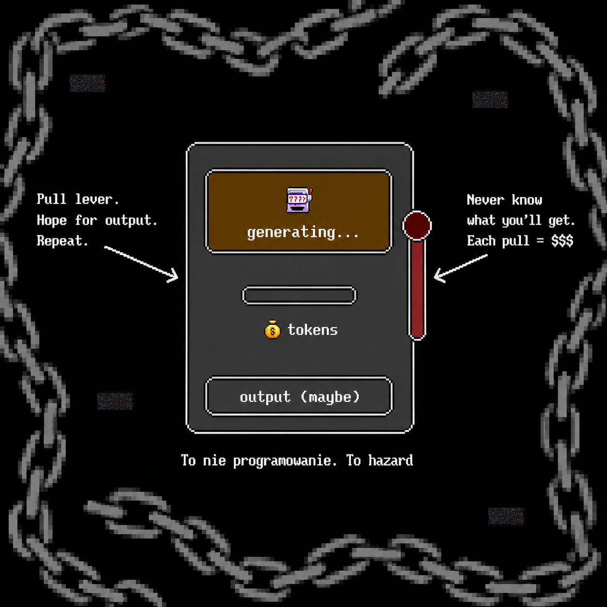
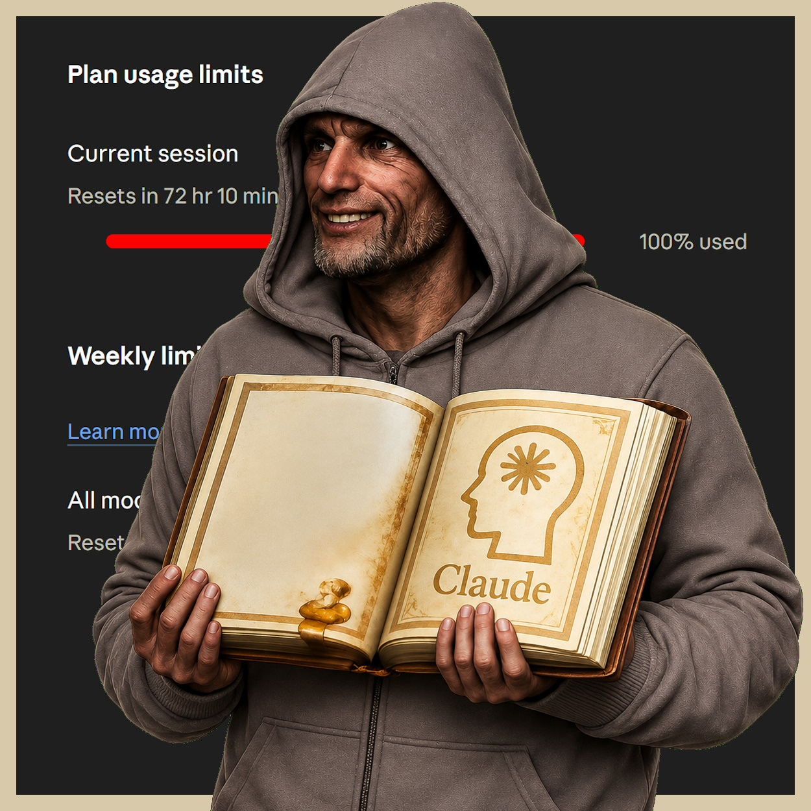
Jak napisać kod, który będzie zrozumiały nawet dla twojego product ownera czy scrum mastera?
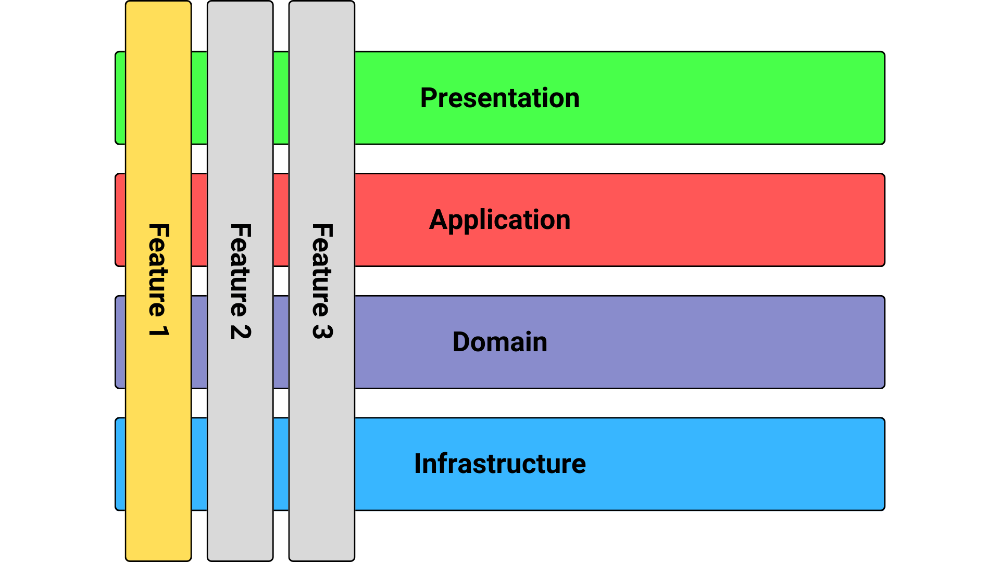
Wniosek 1:
Nazwy klas, metod, folderów, projektów kierują nasz wzrok i mózg do konkretnego fragmentu kodu, który nas interesuje
W Domain Driven Design mamy "Ubiquitous Language" wspólny język między biznesem a programistami
Tak żebyś wiedział gdzie szukać tego w kodzie gdy ktoś biznesowo opisze Ci problem z daną aplikacją
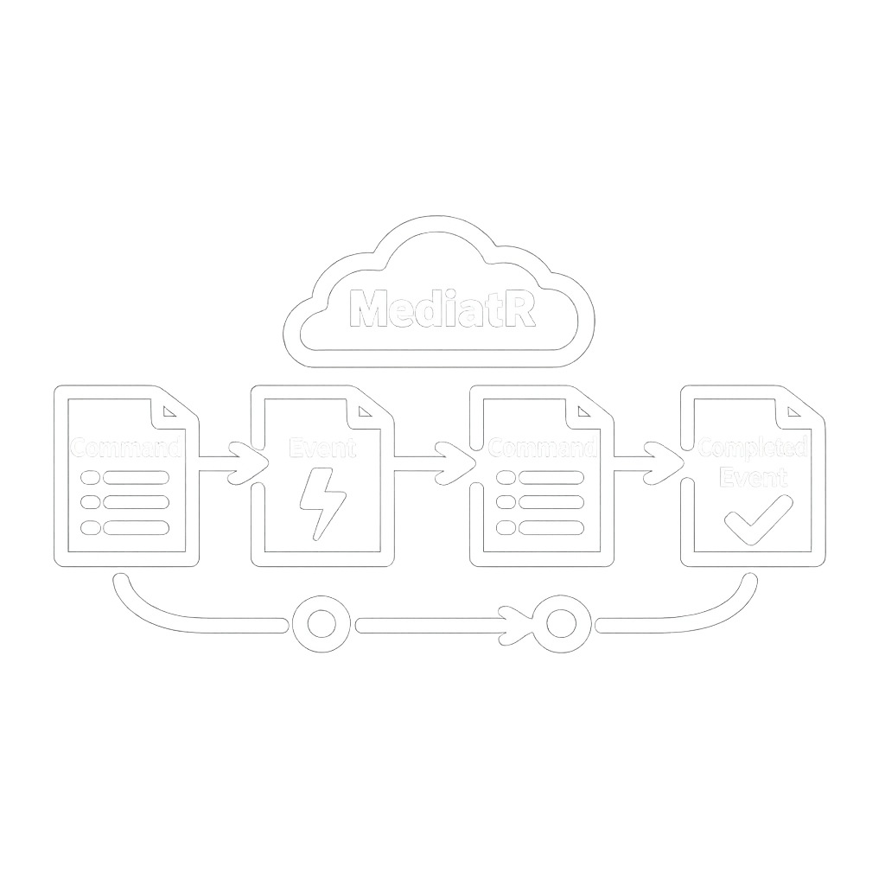
Wniosek 2:
Spodobało mi się to, ze w tym kodzie nie wyrzucałem wyjątków.
Miałem "Rezultaty" które mówiły mi czy dane polecenie się wykonało czy nie i co poszło nie tak
Nie sterowałem przepływem wyjątkami
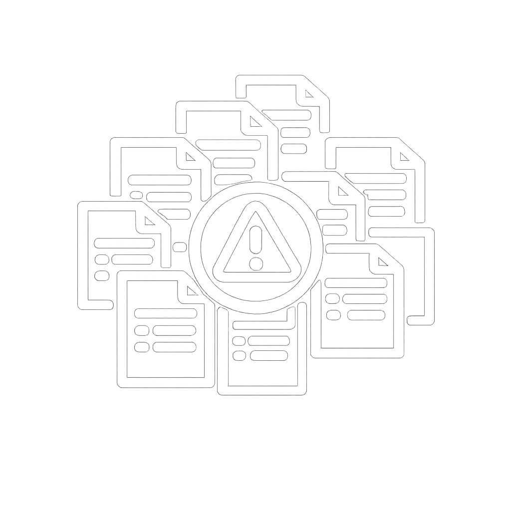
Wniosek 3:
"Zdarzenia" na pewno nie powinny sterować przepływem.
"Zdarzenia" czy strumień zdarzeń powinno dać możliwość podpinania dodatkowego kodu
gdy dane polecenie się wykonało.
Wniosek 4:
Nieważne "jak" muszę mieć w 1 miejscu w kodzie widok przepływu kodu
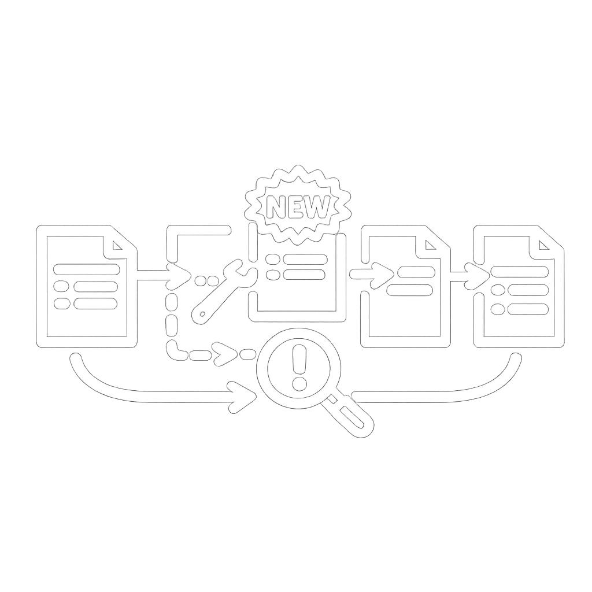
Wniosek 5:
O ile to możliwe stworzyć polecenia jak klocki Lego które mogę dowolnie zmieniać kolejność.
Chociaż wiem, że ma to swoją cenę
Wniosek 6:
Zobaczyłem potrzebę podziału na przepływu per "jeden element", per "cały batch", a w tym rozwiązaniu średnio to było widać
O ile po nazwie można było wszystko znaleźć to najbardziej bolesne było brak czytelności zrozumienia przepływu kodu
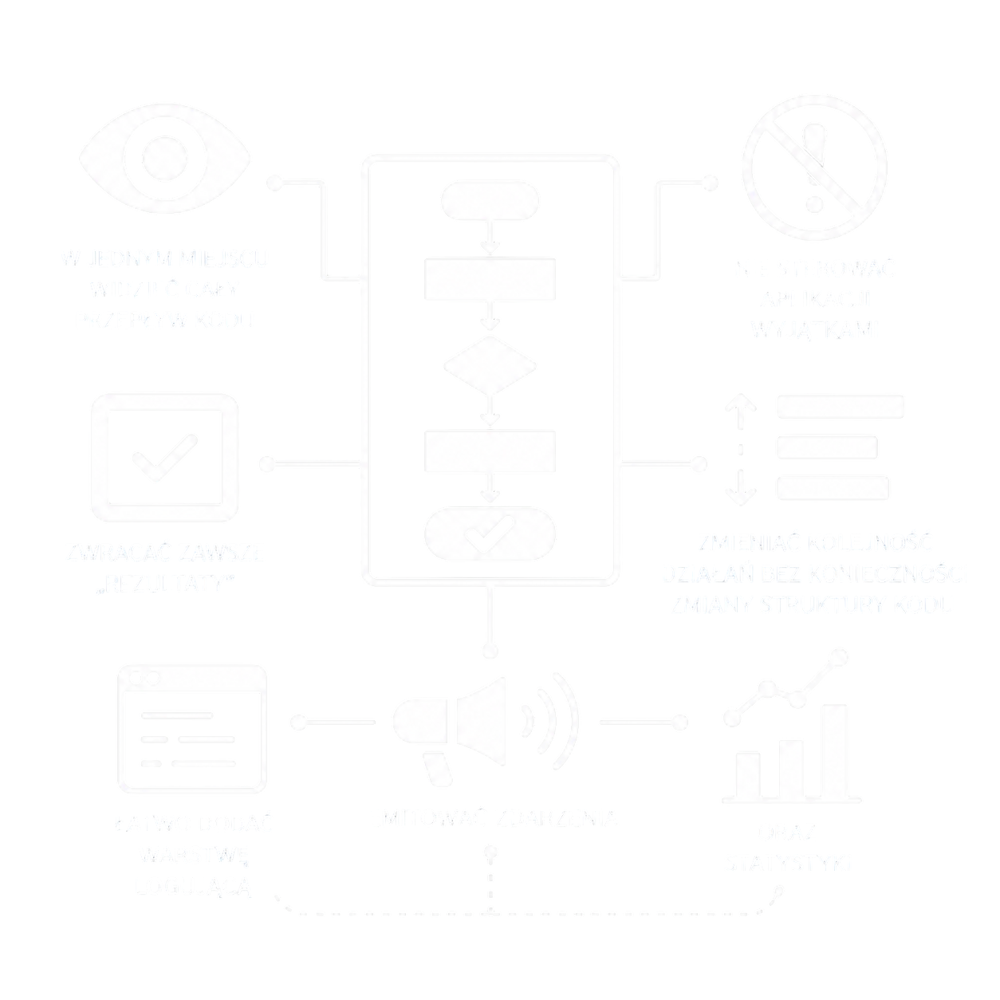
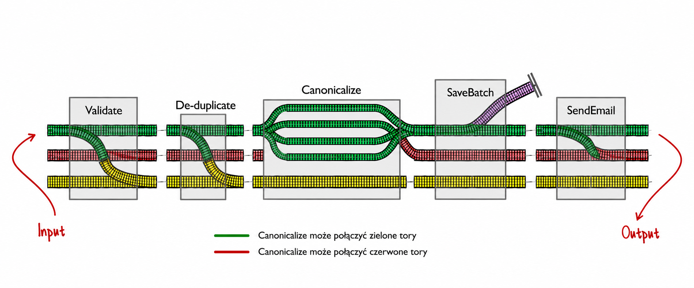
Zaraz to naprawdę nie wyjątków
Wyjątki można wyrzucać tylko gdy nastąpił błąd krytyczny i chcecie wyłączyć bądź zablokować całą aplikację
Warto stworzyć sobie "wajhę", która będzie wrzucała wyjątki zamiast błędnych "rezultatów", aby debugowało się wygodniej
Scentralizowane i widoczny przepływ kodu to jest to
To usunie potrzebę kminienia jak projekty, foldery, pliki powinny być ułożone, bo będzie to widać w 1 miejscu w starcie aplikacji
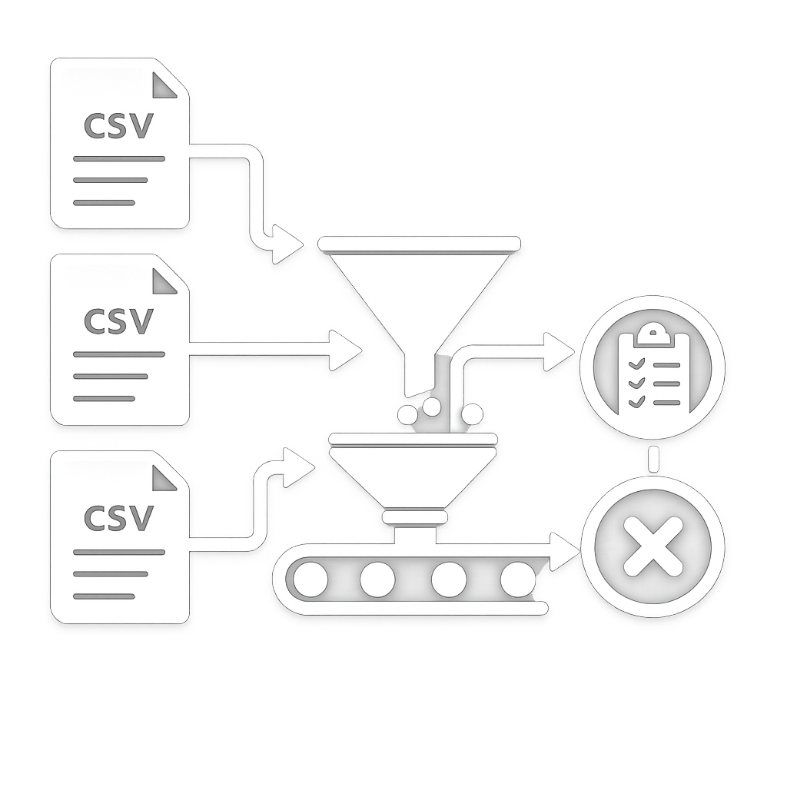
Wniosek 7:
Nie ma co się trzymać się sztywno pewnych zasad. Dla Railway Oriented programming by nam powiedział,
że metody muszą się nazywać "Bind", "Map", "Match" i mieć konkretne sygnatury.
albo mieć klasy "Maybe", "Either"
Ale to nie jest ważne, ważne jest żeby mieć czytelny przepływ kodu
Tutaj wstaw wykład na temat "Monad"
Jednak wiem, że ten "wykład" nic nie będzie wnosić
var filePipeline = Flow.Start()
.Then(StartTimingCommand.Run(bus))
.Then(OpenFileCommand.Run(bus))
.Then(ParseCsvCommand.Run(bus))
.Then(ValidateRowsCommand.Run(bus, app.Rules))
.Then(DeduplicationCommand.Run(bus))
.ThenBranch("SchemaRoute", branch => branch
.When("Orders", ctx => ctx.Schema == "Orders", pipelineOrdersBranch)
.When("Sales", ctx => ctx.Schema == "Sales", pipelineSalesBranch)
.When("Users", ctx => ctx.Schema == "Users", pipelineUsersBranch)
.When("Products", ctx => ctx.Schema == "Products", pipelineProductsBranch))
.ThenWaitForAll("Enrichment",
GeoLookupCommand.Run(bus),
AuditStampCommand.Run(bus))
.Then(MapEntitiesCommand.Run(bus))
.Then(SaveBatchCommand.Run(bus))
.Build();
var filePipeline = Flow.Start()
.Then(new TimingCommand(bus))
.Then(new OpenFileCommand(bus))
.Then(new ParseCsvCommand(bus))
.Then(new ValidateRowsCommand(bus, app.Rules))
.Then(new DeduplicationCommand(bus))
.ThenBranch("SchemaRoute", branch => branch
.When("Orders", ctx => ctx.Schema == "Orders", ordersBranch)
.When("Sales", ctx => ctx.Schema == "Sales", salesBranch)
.When("Users", ctx => ctx.Schema == "Users", usersBranch)
.When("Products", ctx => ctx.Schema == "Products", productsBranch))
.ThenWaitForAll("Enrichment",
new GeoLookupCommand(bus), // np. geolokalizacja regionu
new AuditStampCommand(bus)) // np. audit timestamp
.Then(new MapEntitiesCommand(bus))
.Then(new SaveBatchCommand(bus))
.Build();
var flow = Flow.Start()
// cross-cutting
.Then<StartTimingCommand>()
// wspólne kroki wejściowe
.Then<OpenFileCSVCommand>() // → ctx.FileContext
.Then<ParseCsvCommand>() // → ctx.ParsedFile
.Then<ValidateRowsCommand>() // → ctx.ValidatedFile | ctx.NoItemsReason
.Then<DeduplicationCommand>() // → ctx.ValidatedFile | ctx.NoItemsReason
// rozgałęzienie per schemat
.ThenBranch("SchemaRoute", branch => branch
.When("Orders", ctx => ctx.FileContext?.Schema == "Orders",
then => then.Then<CalcOrderTotalsCommand>())
.When("Sales", ctx => ctx.FileContext?.Schema == "Sales",
then => then.Then<CurrencyConvertCommand>())
.When("Users", ctx => ctx.FileContext?.Schema == "Users",
then => then.Then<ValidateEmailCommand>()) // | ctx.NoItemsReason
.When("Products", ctx => ctx.FileContext?.Schema == "Products",
then => then.Then<ValidateStockCommand>()))
// wspólne kroki wyjściowe
.Then<MapEntitiesCommand>() // → ctx.Entities
// równoległe wzbogacenie
.ThenWaitForAll<GeoLookupCommand, AuditStampCommand>("Enrichment")
.Then<SaveBatchCommand>() // → ctx.ImportResult
// BuildScoped — każde wywołanie = nowy scope DI
.BuildScoped(services);
var filePipeline = Flow.Start()
.Then(new TimingCommand(bus))
.Then(new OpenFileCommand(bus))
.Then(new ParseCsvCommand(bus))
.Then(new ValidateRowsCommand(bus, app.Rules))
.Then(new DeduplicationCommand(bus))
.ThenBranch("SchemaRoute", branch => branch
.When("Orders", ctx => ctx.Schema == "Orders", ordersBranch)
.When("Sales", ctx => ctx.Schema == "Sales", salesBranch)
.When("Users", ctx => ctx.Schema == "Users", usersBranch)
.When("Products", ctx => ctx.Schema == "Products", productsBranch))
.ThenWaitForAll("Enrichment",
new GeoLookupCommand(bus), // np. geolokalizacja regionu
new AuditStampCommand(bus)) // np. audit timestamp
.Then(new MapEntitiesCommand(bus))
.Then(new SaveBatchCommand(bus))
.Build();
public class BatchPipeline
{
private readonly ScopedFlow _flow;
private readonly IPipelineEventBus _bus;
public BatchPipeline(ScopedFlow flow, IPipelineEventBus bus)
{
_flow = flow;
_bus = bus;
}
public async Task<Result<BatchReport>> ProcessBatchAsync(IEnumerable<string> filePaths)
{
var paths = filePaths.ToArray();
var missing = paths.Where(p => !File.Exists(p)).ToArray();
if (missing.Length > 0)
return Result<BatchReport>.Fail(
$"Paths not found: {string.Join(", ", missing.Select(Path.GetFileName))}");
var imports = new List<ImportResult>();
var errors = new List<FileError>();
var skipped = new List<FileSkipped>();
foreach (var path in paths)
{
Console.WriteLine($"\n Plik: {Path.GetFileName(path)}");
var ctx = new PipelineContext { FilePath = path };
await _flow.RunAsync(ctx);
if (ctx.Failed)
errors.Add(new FileError(path, ctx.Error!));
else if (ctx.IsEmpty)
skipped.Add(new FileSkipped(path, ctx.NoItemsReason!));
else
imports.Add(ctx.ImportResult!);
ctx.Trace.Dump();
}
_bus.Publish(new PipelineEvent.BatchCompleted(
paths, imports.Count, errors.Count));
return Result<BatchReport>.Ok(new BatchReport(
Total: paths.Length,
Succeeded: imports.Count,
Skipped: skipped.Count,
Failed: errors.Count,
Imports: imports,
SkippedFiles: skipped,
Errors: errors));
}
}
public abstract record PipelineEvent(string FilePath, DateTime Timestamp)
{
public record StepStarted(
string FilePath, string StepName
) : PipelineEvent(FilePath, DateTime.UtcNow);
public record StepCompleted(
string FilePath, string StepName, TimeSpan Duration, string Detail
) : PipelineEvent(FilePath, DateTime.UtcNow);
public record StepFailed(
string FilePath, string StepName, string Error
) : PipelineEvent(FilePath, DateTime.UtcNow);
public record StepNoItems(
string FilePath, string StepName, string Reason
) : PipelineEvent(FilePath, DateTime.UtcNow);
public record FileCompleted(
string FilePath, int RowsSaved, int RowsSkipped
) : PipelineEvent(FilePath, DateTime.UtcNow);
public record BatchCompleted(
string[] FilePaths, int Succeeded, int Failed
) : PipelineEvent("batch", DateTime.UtcNow);
}
public interface IPipelineEventBus
{
void Publish(PipelineEvent evt);
IDisposable Subscribe(Action<PipelineEvent> handler);
}
public class PipelineEventBus : IPipelineEventBus
{
private readonly List<Action<PipelineEvent>> _handlers = [];
public void Publish(PipelineEvent evt)
{
foreach (var handler in _handlers)
handler(evt);
}
public IDisposable Subscribe(Action<PipelineEvent> handler)
{
_handlers.Add(handler);
return new Unsubscriber(() => _handlers.Remove(handler));
}
private sealed class Unsubscriber(Action onDispose) : IDisposable
{
public void Dispose() => onDispose();
}
}
public static class EventSubscribers
{
/// <summary>
/// Loguje każdy krok na konsolę z ikonami i kolorami.
/// </summary>
public static Action<PipelineEvent> ConsoleLogger => evt =>
{
switch (evt)
{
case PipelineEvent.StepStarted e:
Console.ForegroundColor = ConsoleColor.DarkGray;
Console.WriteLine($" => {e.StepName}...");
Console.ResetColor();
break;
case PipelineEvent.StepCompleted e:
Console.ForegroundColor = ConsoleColor.Green;
Console.Write($" OK {e.StepName,-22}");
Console.ResetColor();
Console.WriteLine($" {e.Duration.TotalMilliseconds,6:F1}ms {e.Detail}");
break;
case PipelineEvent.StepFailed e:
Console.ForegroundColor = ConsoleColor.Red;
Console.WriteLine($" OH NO {e.StepName,-22} {e.Error}");
Console.ResetColor();
break;
case PipelineEvent.StepNoItems e:
Console.ForegroundColor = ConsoleColor.Yellow;
Console.WriteLine($" ○ {e.StepName,-22} {e.Reason}");
Console.ResetColor();
break;
case PipelineEvent.FileCompleted e:
Console.ForegroundColor = ConsoleColor.Cyan;
Console.WriteLine($" => {Path.GetFileName(e.FilePath)}: " +
$"{e.RowsSaved} saved, {e.RowsSkipped} skipped");
Console.ResetColor();
break;
case PipelineEvent.BatchCompleted e:
Console.WriteLine();
Console.ForegroundColor = e.Failed == 0 ? ConsoleColor.Green : ConsoleColor.Yellow;
Console.WriteLine($" Batch: {e.Succeeded} ok / {e.Failed} errors " +
$"({e.FilePaths.Length} total)");
Console.ResetColor();
break;
}
};
/// <summary>
/// Zbiera metryki do analizy — czasy kroków, error rate itp.
/// </summary>
public class MetricsCollector
{
private readonly List<PipelineEvent.StepCompleted> _completed = [];
private readonly List<PipelineEvent.StepFailed> _failed = [];
public IReadOnlyList<PipelineEvent.StepCompleted> Completed => _completed;
public IReadOnlyList<PipelineEvent.StepFailed> Failed => _failed;
public Action<PipelineEvent> Handler => evt =>
{
if (evt is PipelineEvent.StepCompleted sc) _completed.Add(sc);
if (evt is PipelineEvent.StepFailed sf) _failed.Add(sf);
};
public void PrintSummary()
{
Console.WriteLine("\n── Metrics ──────────────────────────────");
var byStep = _completed.GroupBy(c => c.StepName);
foreach (var group in byStep)
{
var avg = group.Average(c => c.Duration.TotalMilliseconds);
var max = group.Max(c => c.Duration.TotalMilliseconds);
Console.WriteLine($" {group.Key,-22} avg={avg:F1}ms max={max:F1}ms n={group.Count()}");
}
Console.WriteLine($" Errors: {_failed.Count}");
}
}
}
public static class EventSubscribers
{
/// <summary>
/// Loguje każdy krok na konsolę z ikonami i kolorami.
/// </summary>
public static Action<PipelineEvent> ConsoleLogger => evt =>
{
switch (evt)
{
case PipelineEvent.StepStarted e:
Console.ForegroundColor = ConsoleColor.DarkGray;
Console.WriteLine($" => {e.StepName}...");
Console.ResetColor();
break;
case PipelineEvent.StepCompleted e:
Console.ForegroundColor = ConsoleColor.Green;
Console.Write($" OK {e.StepName,-22}");
Console.ResetColor();
Console.WriteLine($" {e.Duration.TotalMilliseconds,6:F1}ms {e.Detail}");
break;
case PipelineEvent.StepFailed e:
Console.ForegroundColor = ConsoleColor.Red;
Console.WriteLine($" OH NO {e.StepName,-22} {e.Error}");
Console.ResetColor();
break;
case PipelineEvent.StepNoItems e:
Console.ForegroundColor = ConsoleColor.Yellow;
Console.WriteLine($" ○ {e.StepName,-22} {e.Reason}");
Console.ResetColor();
break;
case PipelineEvent.FileCompleted e:
Console.ForegroundColor = ConsoleColor.Cyan;
Console.WriteLine($" => {Path.GetFileName(e.FilePath)}: " +
$"{e.RowsSaved} saved, {e.RowsSkipped} skipped");
Console.ResetColor();
break;
case PipelineEvent.BatchCompleted e:
Console.WriteLine();
Console.ForegroundColor = e.Failed == 0 ? ConsoleColor.Green : ConsoleColor.Yellow;
Console.WriteLine($" Batch: {e.Succeeded} ok / {e.Failed} errors " +
$"({e.FilePaths.Length} total)");
Console.ResetColor();
break;
}
};
/// <summary>
/// Zbiera metryki do analizy — czasy kroków, error rate itp.
/// </summary>
public class MetricsCollector
{
private readonly List<PipelineEvent.StepCompleted> _completed = [];
private readonly List<PipelineEvent.StepFailed> _failed = [];
public IReadOnlyList<PipelineEvent.StepCompleted> Completed => _completed;
public IReadOnlyList<PipelineEvent.StepFailed> Failed => _failed;
public Action<PipelineEvent> Handler => evt =>
{
if (evt is PipelineEvent.StepCompleted sc) _completed.Add(sc);
if (evt is PipelineEvent.StepFailed sf) _failed.Add(sf);
};
public void PrintSummary()
{
Console.WriteLine("\n── Metrics ──────────────────────────────");
var byStep = _completed.GroupBy(c => c.StepName);
foreach (var group in byStep)
{
var avg = group.Average(c => c.Duration.TotalMilliseconds);
var max = group.Max(c => c.Duration.TotalMilliseconds);
Console.WriteLine($" {group.Key,-22} avg={avg:F1}ms max={max:F1}ms n={group.Count()}");
}
Console.WriteLine($" Errors: {_failed.Count}");
}
}
}
using Microsoft.Extensions.DependencyInjection;
using CsvBatchImporterDI;
using CsvBatchImporterDI.Commands;
using CsvBatchImporterDI.Events;
using CsvBatchImporterDI.Models;
// ═══════════════════════════════════════════════════
// 1. KONTENER DI
// ═══════════════════════════════════════════════════
var services = CompositionRoot.CreateServices();
var bus = services.GetRequiredService<PipelineEventBus>();
var options = services.GetRequiredService<PipelineOptions>();
var env = services.GetRequiredService<EnvironmentInfo>();
var metrics = services.GetRequiredService<EventSubscribers.MetricsCollector>();
// ═══════════════════════════════════════════════════
// 2. SUBSKRYBENCI ZDARZEŃ
// ═══════════════════════════════════════════════════
bus.Subscribe(EventSubscribers.ConsoleLogger);
bus.Subscribe(metrics.Handler);
// ═══════════════════════════════════════════════════
// 3. PIPELINE — tutaj widzisz cały przepływ
// ═══════════════════════════════════════════════════
//
// Trzy ścieżki wynikowe (jak w OneOf<T, Failure, NoItems>):
// ctx.ImportResult → sukces
// ctx.Error → błąd (zły format, nieznany schemat)
// ctx.NoItemsReason → puste (0 wierszy po filtrze, nie błąd)
//
// OpenFile
// Then ParseCsv
// Then ValidateRows ← może: NoItemsToProcess
// Then Deduplication ← może: NoItemsToProcess
// ThenBranch "SchemaRoute"
// ├── When "Orders" → CalcOrderTotals
// ├── When "Sales" → CurrencyConvert
// ├── When "Users" → ValidateEmail ← może: NoItemsToProcess
// └── When "Products" → ValidateStock
// Then MapEntities
// ThenWaitForAll "Enrichment"
// ├── GeoLookup (parallel)
// └── AuditStamp (parallel)
// Then SaveBatch
var flow = Flow.Start()
// cross-cutting
.Then<StartTimingCommand>()
// wspólne kroki wejściowe
.Then<OpenFileCSVCommand>() // → ctx.FileContext
.Then<ParseCsvCommand>() // → ctx.ParsedFile
.Then<ValidateRowsCommand>() // → ctx.ValidatedFile | ctx.NoItemsReason
.Then<DeduplicationCommand>() // → ctx.ValidatedFile | ctx.NoItemsReason
// rozgałęzienie per schemat
.ThenBranch("SchemaRoute", branch => branch
.When("Orders", ctx => ctx.FileContext?.Schema == "Orders",
then => then.Then<CalcOrderTotalsCommand>())
.When("Sales", ctx => ctx.FileContext?.Schema == "Sales",
then => then.Then<CurrencyConvertCommand>())
.When("Users", ctx => ctx.FileContext?.Schema == "Users",
then => then.Then<ValidateEmailCommand>()) // | ctx.NoItemsReason
.When("Products", ctx => ctx.FileContext?.Schema == "Products",
then => then.Then<ValidateStockCommand>()))
// wspólne kroki wyjściowe
.Then<MapEntitiesCommand>() // → ctx.Entities
// równoległe wzbogacenie
.ThenWaitForAll<GeoLookupCommand, AuditStampCommand>("Enrichment")
.Then<SaveBatchCommand>() // → ctx.ImportResult
// BuildScoped — każde wywołanie = nowy scope DI
.BuildScoped(services);
// ═══════════════════════════════════════════════════
// 4. DANE WEJŚCIOWE
// ═══════════════════════════════════════════════════
var baseDir = AppContext.BaseDirectory;
var dataDir = Path.Combine(baseDir, "SampleData");
var filePaths = new[]
{
Path.Combine(dataDir, "users.csv"), // → sukces
Path.Combine(dataDir, "users_all_invalid.csv"), // → NoItemsToProcess (all rows fail validation)
Path.Combine(dataDir, "orders.csv"), // → sukces
Path.Combine(dataDir, "sales.csv"), // → sukces
Path.Combine(dataDir, "invoices_unknown_schema.csv"), // → Failure (unknown schema)
Path.Combine(dataDir, "missing_file.csv"), // → pominięty (pre-filter)
};
var existingPaths = filePaths.Where(File.Exists).ToArray();
var missingPaths = filePaths.Where(p => !File.Exists(p)).ToArray();
// ═══════════════════════════════════════════════════
// 5. URUCHOMIENIE
// ═══════════════════════════════════════════════════
Console.WriteLine("╔══════════════════════════════════════════════╗");
Console.WriteLine("║ CSV Batch Importer [Flow + Scoped DI] ║");
Console.WriteLine("╚══════════════════════════════════════════════╝");
Console.Write($"\nEnvironment: {env.Name} | BreakOnError: ");
if (options.BreakOnError)
{
Console.ForegroundColor = ConsoleColor.Yellow;
Console.WriteLine("true ← debugger zatrzyma się na błędzie");
}
else
{
Console.ForegroundColor = ConsoleColor.Green;
Console.WriteLine("false ← tryb produkcyjny");
}
Console.ResetColor();
if (missingPaths.Length > 0)
{
Console.ForegroundColor = ConsoleColor.Yellow;
Console.WriteLine("\nPominięte (nie znaleziono):");
foreach (var m in missingPaths)
Console.WriteLine($" ✗ {Path.GetFileName(m)}");
Console.ResetColor();
}
Console.WriteLine($"\nPipeline: {string.Join(" → ", flow.GetRegistered())}");
Console.WriteLine($"Batch: {existingPaths.Length} plików\n");
Console.WriteLine("─────────────────────────────────────────────");
var batch = new BatchPipeline(flow, bus);
var result = await batch.ProcessBatchAsync(existingPaths);
// ═══════════════════════════════════════════════════
// 6. RAPORT — trzy sekcje: sukces / puste / błędy
// ═══════════════════════════════════════════════════
Console.WriteLine("\n─────────────────────────────────────────────");
Console.WriteLine("RAPORT BATCHA");
Console.WriteLine("─────────────────────────────────────────────");
if (!result.IsSuccess)
{
Console.ForegroundColor = ConsoleColor.Red;
Console.WriteLine($"Batch zakończony błędem: {result.Error}");
Console.ResetColor();
return;
}
var report = result.Value!;
if (report.Succeeded > 0)
{
Console.ForegroundColor = ConsoleColor.Green;
Console.WriteLine($"\nZaimportowane ({report.Succeeded}):");
Console.ResetColor();
foreach (var imp in report.Imports)
{
var skip = imp.RowsSkipped > 0 ? $" ({imp.RowsSkipped} pominięto)" : "";
Console.WriteLine($" + {Path.GetFileName(imp.FilePath)}: {imp.RowsSaved} wierszy{skip}");
}
}
if (report.Skipped > 0)
{
Console.ForegroundColor = ConsoleColor.Yellow;
Console.WriteLine($"\nPominięte — brak wierszy ({report.Skipped}):");
Console.ResetColor();
foreach (var sk in report.SkippedFiles)
Console.WriteLine($" ○ {Path.GetFileName(sk.Path)}: {sk.Reason}");
}
var allErrors = report.Errors
.Concat(missingPaths.Select(p => new FileError(p, "File not found")))
.ToList();
if (allErrors.Count > 0)
{
Console.ForegroundColor = ConsoleColor.Red;
Console.WriteLine($"\nBłędy ({allErrors.Count}):");
Console.ResetColor();
foreach (var err in allErrors)
Console.WriteLine($" - {Path.GetFileName(err.Path)}: {err.Reason}");
}
var total = report.Total + missingPaths.Length;
Console.WriteLine($"\nŁącznie: {total} | OK: {report.Succeeded} | Puste: {report.Skipped} | Błędy: {allErrors.Count}");
Console.ForegroundColor = allErrors.Count == 0 && report.Skipped == 0 ? ConsoleColor.Green
: report.Succeeded > 0 ? ConsoleColor.Yellow : ConsoleColor.Red;
Console.WriteLine(allErrors.Count == 0 && report.Skipped == 0 ? "Batch OK."
: report.Succeeded > 0 ? "Częściowy sukces." : "Batch failed.");
Console.ResetColor();
metrics.PrintSummary();
/// <summary>
/// Mutowalny kontekst przepływu — każdy polecenie czyta/pisze swoje pola.
/// Jeśli Error != null, kolejne polecenia powinny się pominąć.
/// </summary>
public class PipelineContext
{
public required string FilePath { get; init; }
// Wyniki poszczególnych kroków — nullable bo wypełniane stopniowo
public FileContext? FileContext { get; set; }
public ParsedFile? ParsedFile { get; set; }
public ValidatedFile? ValidatedFile { get; set; }
public List<MappedEntity>? Entities { get; set; }
public ImportResult? ImportResult { get; set; }
// Błąd — jeśli ustawiony, pipeline się zatrzymuje
public string? Error { get; set; }
public bool Failed => Error is not null;
// Trzecia ścieżka — brak elementów do przetworzenia (nie błąd!)
public string? NoItemsReason { get; set; }
public bool IsEmpty => NoItemsReason is not null;
// Cokolwiek przerwało pipeline
public bool Halted => Failed || IsEmpty;
// Metadane do debugowania i raportowania
public PipelineTrace Trace { get; } = new();
// Dodatkowe dane z kroków schema-specific (np. OrdersTotal, CurrencyConverted)
public Dictionary<string, string> Metadata { get; } = [];
// Scoped DI provider — ustawiany przez ScopedFlow, dostępny dla sub-flow
public IServiceProvider? ScopedServices { get; set; }
}
Z wbudowaną obsługą "statystk", "drukowaniem przepływu w konsoli", "tworzeniem pliku logu per nazwany pipeline z Serilog",
oraz z Circuit Breakerem który blokuje cały pipeline jeśli jest więcej błędów niż "N"
/// <summary>
/// KafkaFlow middleware for batched inventory sync messages.
/// Uses AddBatching + WithManualMessageCompletion.
/// Commits the batch offset only on successful pipeline execution.
/// Register as Transient.
/// </summary>
public class InventorySyncBatchHandler : IMessageMiddleware
{
private readonly InventoryPipelineFactory _factory;
private readonly ILogger<InventorySyncBatchHandler> _logger;
private readonly PipelineLogsOptions _pipelineLogsOptions;
public InventorySyncBatchHandler(InventoryPipelineFactory factory, ILogger<InventorySyncBatchHandler> logger,
PipelineLogsOptions pipelineLogsOptions)
{
_factory = factory;
_logger = logger;
_pipelineLogsOptions = pipelineLogsOptions;
}
public async Task Invoke(IMessageContext context, MiddlewareDelegate next)
{
var batch = context.GetMessagesBatch();
_logger.LogInformation("Received inventory sync batch: {Count} messages", batch.Count);
var syncMessages = new List<KafkaInventorySyncMessage>();
foreach (var msg in batch)
{
if (msg.Message.Value is KafkaInventorySyncMessage syncMsg)
{
syncMessages.Add(syncMsg);
}
else
{
_logger.LogWarning("Unexpected message type in inventory batch: {Type}",
msg.Message.Value?.GetType().Name ?? "null");
}
}
if (!syncMessages.Any())
{
_logger.LogWarning("No valid inventory sync messages in batch — skipping");
return;
}
var pipelineContext = BuildContext(syncMessages);
var name = _pipelineLogsOptions.Pipelines[nameof(InventorySyncBatchHandler)];
var result = await _factory.Create(name).ExecuteAsync(pipelineContext);
if (result.IsSuccess)
{
batch.Commit();
_logger.LogInformation(
"Inventory batch SUCCESS | BatchId: {Id} | Persisted: {P}/{T} | Warehouses: {W} | Duration: {D}ms",
pipelineContext.BatchId,
pipelineContext.PersistedItems.Count,
pipelineContext.Items.Count,
pipelineContext.ByWarehouse.Count,
result.ExecutionStats?.TotalDuration.TotalMilliseconds ?? 0);
}
else if (result.WasTerminatedEarly)
{
_logger.LogWarning("Inventory batch terminated early: {Reason}. Batch NOT committed.",
result.TerminationReason);
}
else
{
_logger.LogError(
"Inventory batch FAILED: {Error}. Batch NOT committed — {Count} messages will be re-delivered.",
result.ErrorMessage, batch.Count);
}
}
private static InventorySyncContext BuildContext(List<KafkaInventorySyncMessage> messages)
{
var context = new InventorySyncContext
{
ProcessingStartedAt = DateTime.UtcNow,
BatchSize = messages.Count
};
foreach (var msg in messages)
{
context.Items.Add(new ProcessableInventoryItem { Original = msg });
}
return context;
}
}
/// <summary>
/// Builds inventory sync pipelines on demand.
/// Register as Transient.
/// </summary>
public class InventoryPipelineFactory
{
private readonly GlobalStatisticsTracker _stats;
private readonly IServiceProvider _serviceProvider;
private readonly ILogger<InventoryPipelineFactory> _logger;
public InventoryPipelineFactory(
GlobalStatisticsTracker stats,
IServiceProvider serviceProvider,
ILogger<InventoryPipelineFactory> logger)
{
_stats = stats;
_serviceProvider = serviceProvider;
_logger = logger;
}
/// <summary>
/// Creates a fully built inventory sync pipeline with the given name.
/// Each call returns a distinct pipeline instance — use once per handler.
/// </summary>
public CommandPipeline<InventorySyncContext> Create(string pipelineName)
{
var pipeline = new CommandPipeline<InventorySyncContext>(
_stats, _serviceProvider, pipelineName);
pipeline.AddEventHandler(new KafkaPipelineEventHandler());
new CommandChainBuilder<InventorySyncContext>(pipeline)
.Then<ValidateInventoryCommand>()
.Then<AggregateInventoryCommand>()
.Then<PersistInventoryCommand>()
.Build();
_logger.LogInformation(
"[{Pipeline}] Inventory pipeline built: Validate → Aggregate → Persist",
pipelineName);
return pipeline;
}
}
using KafkaFlow;
using KafkaFlow.Serializer;
using KafkaPipeline.ConsumerDI;
using KafkaPipeline.ConsumerDI.Pipeline;
using KafkaPipeline.ConsumerDI.Pipeline.Handlers;
using KafkaPipeline.Shared;
using Microsoft.Extensions.Configuration;
using Microsoft.Extensions.DependencyInjection;
using Microsoft.Extensions.Hosting;
using Serilog;
using Serilog.Events;
namespace KafkaPipeline.ConsumerDI;
public class Program
{
private const string InventoryConsumerName = "inventory-consumer";
public static async Task Main(string[] args)
{
var configuration = new ConfigurationBuilder()
.SetBasePath(Directory.GetCurrentDirectory())
.AddJsonFile("appsettings.json", optional: false)
.AddEnvironmentVariables()
.Build();
var pipelineLogs = configuration
.GetSection(PipelineLogsOptions.Section)
.Get<PipelineLogsOptions>() ?? new PipelineLogsOptions();
Log.Logger = BuildLogger(pipelineLogs);
try
{
Log.Information("╔════════════════════════════════════════════════════════════════╗");
Log.Information("║ Kafka Pipeline Consumer — DI Edition ║");
Log.Information("║ All commands resolved from IServiceScope per execution ║");
Log.Information("║ Broker: localhost:19092 ║");
Log.Information("║ Topics: ║");
Log.Information("║ • {Topic,-46}║", KafkaTopics.OrdersInbound + " (linear pipeline)");
Log.Information("║ • {Topic,-46}║", KafkaTopics.PaymentsInbound + " (branching pipeline)");
Log.Information("║ • {Topic,-46}║", KafkaTopics.InventorySync + " (batch pipeline)");
Log.Information("╚════════════════════════════════════════════════════════════════╝");
var host = Host
.CreateDefaultBuilder(args)
.UseSerilog()
.ConfigureServices((context, services) =>
{
services.Configure<PipelineLogsOptions>(
context.Configuration.GetSection(PipelineLogsOptions.Section));
// Register all pipeline services, commands, repositories, handlers, factories
services.AddSingleton<PipelineLogsOptions>(pipelineLogs);
services.AddKafkaPipelineServices();
services.AddKafkaFlowHostedService(kafka => kafka
.UseMicrosoftLog()
.AddCluster(cluster => cluster
.WithBrokers(new[] { "localhost:19092" })
.CreateTopicIfNotExists(KafkaTopics.InventorySync, numberOfPartitions: 3, replicationFactor: 1)
// ── Consumer : Inventory Sync (batch pipeline) ───────────────────────
.AddConsumer(consumer => consumer
.Topic(KafkaTopics.InventorySync)
.WithGroupId(KafkaConsumerGroups.InventorySyncGroup)
.WithName(InventoryConsumerName)
.WithBufferSize(200)
.WithWorkersCount(1)
.WithAutoOffsetReset(AutoOffsetReset.Earliest)
.WithManualMessageCompletion()
.AddMiddlewares(middlewares => middlewares
.AddDeserializer<JsonCoreDeserializer>()
.AddBatching(50, TimeSpan.FromSeconds(5))
.Add<InventorySyncBatchHandler>()
)
)
)
);
})
.Build();
try
{
var inventoryFactory = host.Services.GetRequiredService<InventoryPipelineFactory>();
Log.Information("All pipeline factories built successfully");
}
catch (Exception ex)
{
Log.Fatal(ex, "Failed to build pipeline factories");
return;
}
await host.RunAsync();
}
catch (Exception ex)
{
Log.Fatal(ex, "Consumer terminated unexpectedly");
}
finally
{
Log.Information("Consumer shutting down...");
await Log.CloseAndFlushAsync();
}
}
private static ILogger BuildLogger(PipelineLogsOptions options)
{
var config = new LoggerConfiguration()
.MinimumLevel.Debug()
.MinimumLevel.Override("Microsoft", LogEventLevel.Warning)
.MinimumLevel.Override("KafkaFlow", LogEventLevel.Warning)
.Enrich.FromLogContext()
.WriteTo.Console(
outputTemplate: "[{Timestamp:HH:mm:ss.fff} {Level:u3}] {Message:lj}{NewLine}{Exception}")
.WriteTo.File(
path: Path.Combine(options.Directory, "log.txt"),
rollingInterval: RollingInterval.Hour,
outputTemplate: "{Timestamp:yyyy-MM-dd HH:mm:ss.fff} [{Level:u3}] [{CommandPipelineName}] [{ExecutionId}] {Message:lj}{NewLine}{Exception}");
// Per-pipeline sub-loggers — filter by CommandPipelineName enriched via LogContext
foreach (var pipelineName in options.Pipelines.Values.Distinct())
{
var name = pipelineName; // local copy for lambda closure
var logPath = Path.Combine(options.Directory, name, "log.txt");
config = config.WriteTo.Logger(lc => lc
.Filter.ByIncludingOnly(evt =>
evt.Properties.TryGetValue("CommandPipelineName", out var value)
&& value.ToString().Trim('"') == name)
.WriteTo.File(
path: logPath,
rollingInterval: RollingInterval.Hour,
outputTemplate: "{Timestamp:yyyy-MM-dd HH:mm:ss.fff} [{Level:u3}] [{ExecutionId}] {Message:lj}{NewLine}{Exception}"));
}
return config.CreateLogger();
}
}
public class InventorySyncContext
{
public string BatchId { get; set; } = Guid.NewGuid().ToString("N")[..8];
public DateTime ProcessingStartedAt { get; set; } = DateTime.UtcNow;
public int BatchSize { get; set; }
public List<ProcessableInventoryItem> Items { get; set; } = new();
public List<ProcessableInventoryItem> ValidatedItems { get; set; } = new();
public Dictionary<string, List<ProcessableInventoryItem>> ByWarehouse { get; set; } = new();
public List<ProcessableInventoryItem> PersistedItems { get; set; } = new();
public List<ProcessableInventoryItem> FailedItems { get; set; } = new();
}
public class InventorySyncContext
{
public string BatchId { get; set; } = Guid.NewGuid().ToString("N")[..8];
public DateTime ProcessingStartedAt { get; set; } = DateTime.UtcNow;
public int BatchSize { get; set; }
public List<ProcessableInventoryItem> Items { get; set; } = new();
public List<ProcessableInventoryItem> FailedItems { get; set; } = new();
}
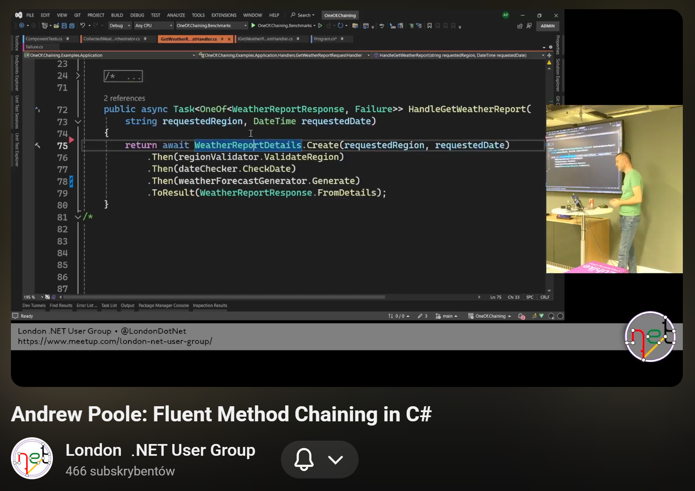
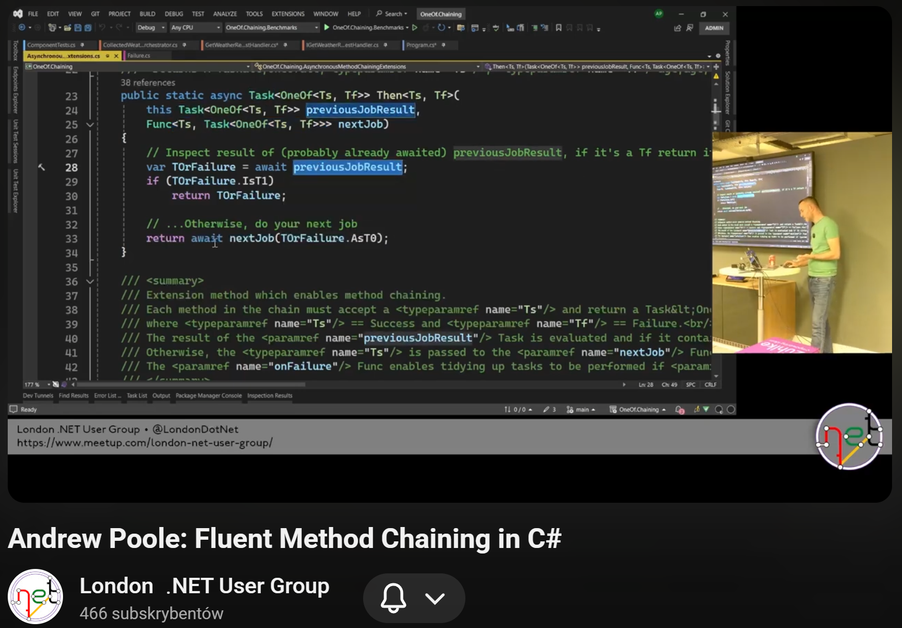
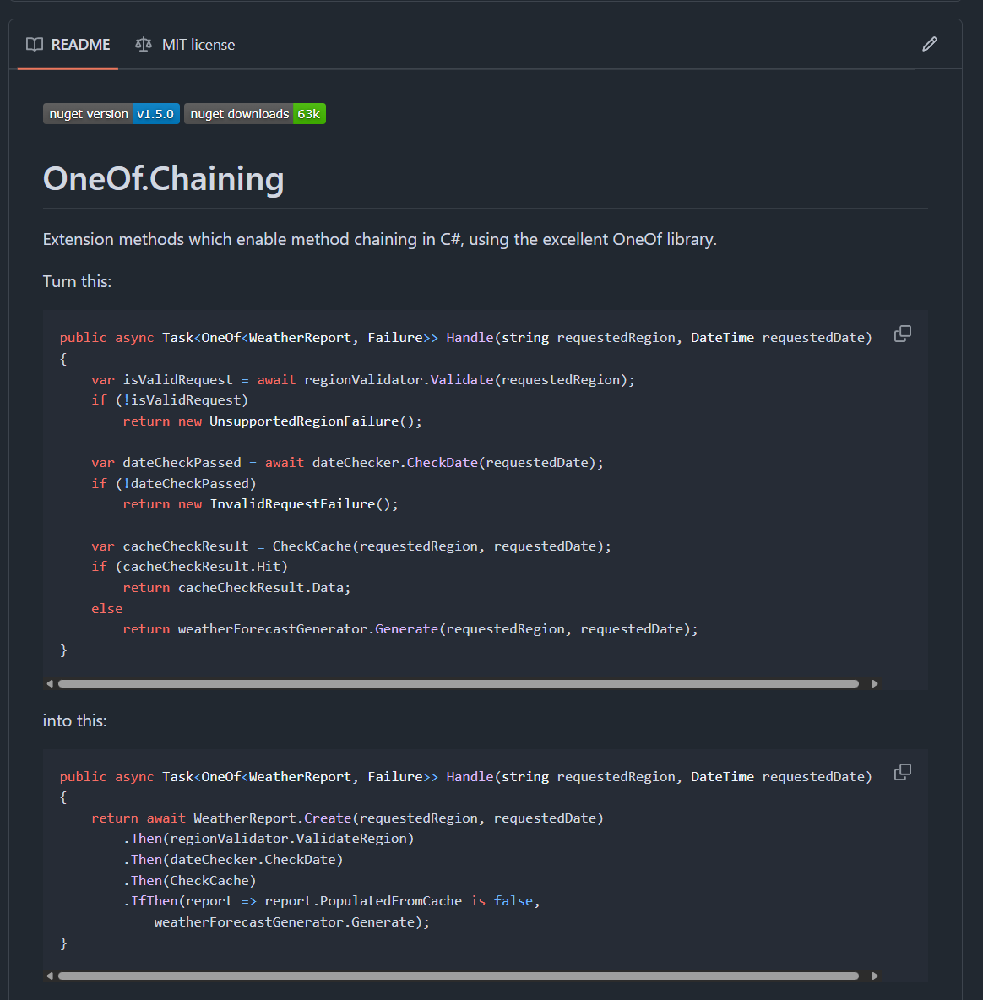
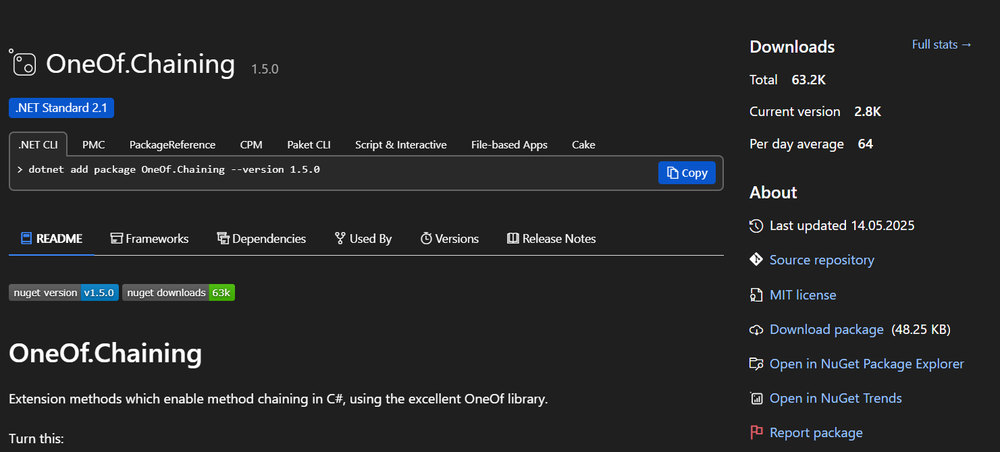
OneOf<User, Error>
OneOf<User, NotFound, ValidationError>
OneOf<Success, Failure>
/// <summary>
/// Extension methods dla OneOf<TSuccess, TFailure, TEmpty> — trzy ścieżki:
/// T0 = sukces → kontynuuj łańcuch
/// T1 = failure → przerwij (błąd)
/// T2 = empty → przerwij (brak elementów, nie błąd)
///
/// Wzorowane na OneOf.Chaining, rozszerzone o trzeci wariant.
/// </summary>
public static class OneOfTripleExtensions
{
/// <summary>
/// Then — wykonaj następny krok jeśli sukces, inaczej propaguj failure/empty.
/// </summary>
public static async Task<OneOf<TSuccess, TFailure, TEmpty>> Then<TSuccess, TFailure, TEmpty>(
this Task<OneOf<TSuccess, TFailure, TEmpty>> currentResult,
Func<TSuccess, Task<OneOf<TSuccess, TFailure, TEmpty>>> nextJob)
{
var result = await currentResult;
return result.Match<OneOf<TSuccess, TFailure, TEmpty>>(
success => nextJob(success).Result,
failure => failure,
empty => empty);
}
/// <summary>
/// Then (async-safe) — wersja poprawnie awaitująca.
/// </summary>
public static async Task<OneOf<TSuccess, TFailure, TEmpty>> ThenAsync<TSuccess, TFailure, TEmpty>(
this Task<OneOf<TSuccess, TFailure, TEmpty>> currentResult,
Func<TSuccess, Task<OneOf<TSuccess, TFailure, TEmpty>>> nextJob)
{
var result = await currentResult;
if (result.IsT1) return result.AsT1; // failure
if (result.IsT2) return result.AsT2; // empty
return await nextJob(result.AsT0);
}
/// <summary>
/// IfThen — wykonaj krok TYLKO gdy predykat == true i jest sukces.
/// </summary>
public static async Task<OneOf<TSuccess, TFailure, TEmpty>> IfThen<TSuccess, TFailure, TEmpty>(
this Task<OneOf<TSuccess, TFailure, TEmpty>> currentResult,
Func<TSuccess, bool> condition,
Func<TSuccess, Task<OneOf<TSuccess, TFailure, TEmpty>>> nextJob)
{
var result = await currentResult;
if (result.IsT1) return result.AsT1;
if (result.IsT2) return result.AsT2;
var success = result.AsT0;
if (!condition(success)) return success;
return await nextJob(success);
}
/// <summary>
/// Sync Then — dla kroków synchronicznych.
/// </summary>
public static async Task<OneOf<TSuccess, TFailure, TEmpty>> Then<TSuccess, TFailure, TEmpty>(
this Task<OneOf<TSuccess, TFailure, TEmpty>> currentResult,
Func<TSuccess, OneOf<TSuccess, TFailure, TEmpty>> nextJob)
{
var result = await currentResult;
if (result.IsT1) return result.AsT1;
if (result.IsT2) return result.AsT2;
return nextJob(result.AsT0);
}
}
public static class CompositionRoot
{
public static IServiceProvider CreateServices()
{
var services = new ServiceCollection();
// Kroki pipeline'u — każdy jako serwis DI
services.AddScoped<FileSteps>();
services.AddScoped<ValidationSteps>();
services.AddScoped<MappingSteps>();
services.AddScoped<PersistenceSteps>();
// Schema-specific
services.AddScoped<OrderSteps>();
services.AddScoped<SalesSteps>();
services.AddScoped<UserSteps>();
services.AddScoped<ProductSteps>();
// Enrichment
services.AddScoped<EnrichmentSteps>();
return services.BuildServiceProvider();
}
}
using Microsoft.Extensions.DependencyInjection;
using CsvImporter;
using CsvImporter.Models;
using CsvImporter.Steps;
// ═══════════════════════════════════════════════════
// 1. SETUP
// ═══════════════════════════════════════════════════
var services = CompositionRoot.CreateServices();
var dataDir = Path.Combine(AppContext.BaseDirectory, "SampleData");
var filePaths = new[]
{
Path.Combine(dataDir, "users.csv"),
Path.Combine(dataDir, "users_all_invalid.csv"), // ← NoItemsToProcess: all rows fail validation
Path.Combine(dataDir, "orders.csv"),
Path.Combine(dataDir, "sales.csv"),
Path.Combine(dataDir, "invoices_unknown_schema.csv"), // ← Failure: unknown schema
Path.Combine(dataDir, "missing_file.csv"), // ← skipped: file not found
};
var existingPaths = filePaths.Where(File.Exists).ToArray();
var missingPaths = filePaths.Where(p => !File.Exists(p)).ToArray();
Console.WriteLine("╔══════════════════════════════════════════════╗");
Console.WriteLine("║ CSV Batch Importer [OneOf.Chaining] ║");
Console.WriteLine("╚══════════════════════════════════════════════╝");
if (missingPaths.Length > 0)
{
Console.ForegroundColor = ConsoleColor.Yellow;
Console.WriteLine("\nPominięte (nie znaleziono):");
foreach (var m in missingPaths)
Console.WriteLine($" ✗ {Path.GetFileName(m)}");
Console.ResetColor();
}
Console.WriteLine($"\nBatch: {existingPaths.Length} plików\n");
Console.WriteLine("─────────────────────────────────────────────");
var imports = new List<ImportResult>();
var errors = new List<FileError>();
var skipped = new List<(string Path, string Reason)>();
foreach (var path in existingPaths)
{
Console.WriteLine($"\n Plik: {Path.GetFileName(path)}");
await using var scope = services.CreateAsyncScope();
var sp = scope.ServiceProvider;
var file = sp.GetRequiredService<FileSteps>();
var validation = sp.GetRequiredService<ValidationSteps>();
var mapping = sp.GetRequiredService<MappingSteps>();
var persistence= sp.GetRequiredService<PersistenceSteps>();
var orders = sp.GetRequiredService<OrderSteps>();
var sales = sp.GetRequiredService<SalesSteps>();
var users = sp.GetRequiredService<UserSteps>();
var products = sp.GetRequiredService<ProductSteps>();
var enrichment = sp.GetRequiredService<EnrichmentSteps>();
// ── Cały przepływ ─────────────────────────────
var result = await ImportContext.Create(path)
// wspólne kroki wejściowe
.ThenAsync(file.OpenFile)
.ThenAsync(file.ParseCsv)
.ThenAsync(validation.ValidateRows) // → może: NoItemsToProcess
.ThenAsync(validation.Deduplicate) // → może: NoItemsToProcess
// rozgałęzienie per schemat
.IfThen(ctx => ctx.Schema == "Orders", orders.CalcTotals)
.IfThen(ctx => ctx.Schema == "Sales", sales.ConvertCurrency)
.IfThen(ctx => ctx.Schema == "Users", users.ValidateEmails) // → może: NoItemsToProcess
.IfThen(ctx => ctx.Schema == "Products", products.ValidateStock)
// wspólne kroki wyjściowe
.ThenAsync(mapping.MapEntities)
.ThenAsync(enrichment.GeoLookup)
.ThenAsync(enrichment.AuditStamp)
.ThenAsync(persistence.SaveBatch);
// ── Obsługa trzech ścieżek ────────────────────
result.Switch(
ctx =>
{
// Sukces
foreach (var t in ctx.Trace)
{
Console.ForegroundColor = ConsoleColor.Green;
Console.Write($" ✓ {t.Step,-22}");
Console.ResetColor();
Console.WriteLine($" {t.Duration.TotalMilliseconds,6:F1}ms {t.Detail}");
}
imports.Add(ctx.Result!);
},
failure =>
{
// Błąd = łańcuch przerwany
Console.ForegroundColor = ConsoleColor.Red;
Console.WriteLine($" ✗ {failure}");
Console.ResetColor();
errors.Add(new FileError(path, failure.Reason));
},
noItems =>
{
// ○ Puste — plik poprawny, ale 0 wierszy po filtrze
// Wypisz trace z kroków które się wykonały PRZED przerwaniem
foreach (var t in noItems.Context.Trace)
{
Console.ForegroundColor = ConsoleColor.DarkGray;
Console.Write($" ✓ {t.Step,-22}");
Console.ResetColor();
Console.WriteLine($" {t.Duration.TotalMilliseconds,6:F1}ms {t.Detail}");
}
Console.ForegroundColor = ConsoleColor.Yellow;
Console.WriteLine($" ○ {noItems}");
Console.ResetColor();
skipped.Add((path, noItems.Reason));
});
}
// ═══════════════════════════════════════════════════
// 3. RAPORT
// ═══════════════════════════════════════════════════
var allErrors = errors
.Concat(missingPaths.Select(p => new FileError(p, "File not found")))
.ToList();
Console.WriteLine("\n─────────────────────────────────────────────");
Console.WriteLine("RAPORT BATCHA");
Console.WriteLine("─────────────────────────────────────────────");
if (imports.Count > 0)
{
Console.ForegroundColor = ConsoleColor.Green;
Console.WriteLine($"\nZaimportowane ({imports.Count}):");
Console.ResetColor();
foreach (var imp in imports)
{
var skip = imp.RowsSkipped > 0 ? $" ({imp.RowsSkipped} pominięto)" : "";
Console.WriteLine($" + {Path.GetFileName(imp.FilePath)}: {imp.RowsSaved} wierszy{skip}");
}
}
if (skipped.Count > 0)
{
Console.ForegroundColor = ConsoleColor.Yellow;
Console.WriteLine($"\nPominięte — brak wierszy ({skipped.Count}):");
Console.ResetColor();
foreach (var (p, reason) in skipped)
Console.WriteLine($" ○ {Path.GetFileName(p)}: {reason}");
}
if (allErrors.Count > 0)
{
Console.ForegroundColor = ConsoleColor.Red;
Console.WriteLine($"\nBłędy ({allErrors.Count}):");
Console.ResetColor();
foreach (var err in allErrors)
Console.WriteLine($" - {Path.GetFileName(err.Path)}: {err.Reason}");
}
var total = existingPaths.Length + missingPaths.Length;
Console.WriteLine($"\nŁącznie: {total} | OK: {imports.Count} | Puste: {skipped.Count} | Błędy: {allErrors.Count}");
Console.ForegroundColor = allErrors.Count == 0 && skipped.Count == 0 ? ConsoleColor.Green
: imports.Count > 0 ? ConsoleColor.Yellow : ConsoleColor.Red;
Console.WriteLine(allErrors.Count == 0 && skipped.Count == 0 ? "Batch OK."
: imports.Count > 0 ? "Częściowy sukces." : "Batch failed.");
Console.ResetColor();
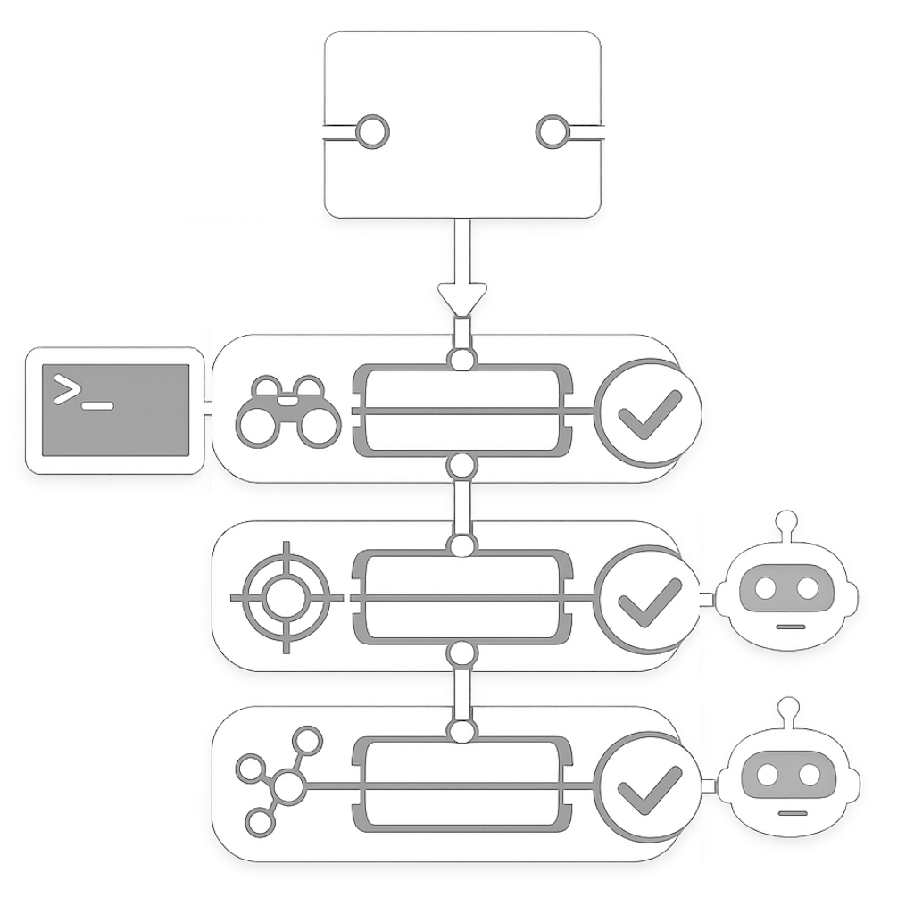
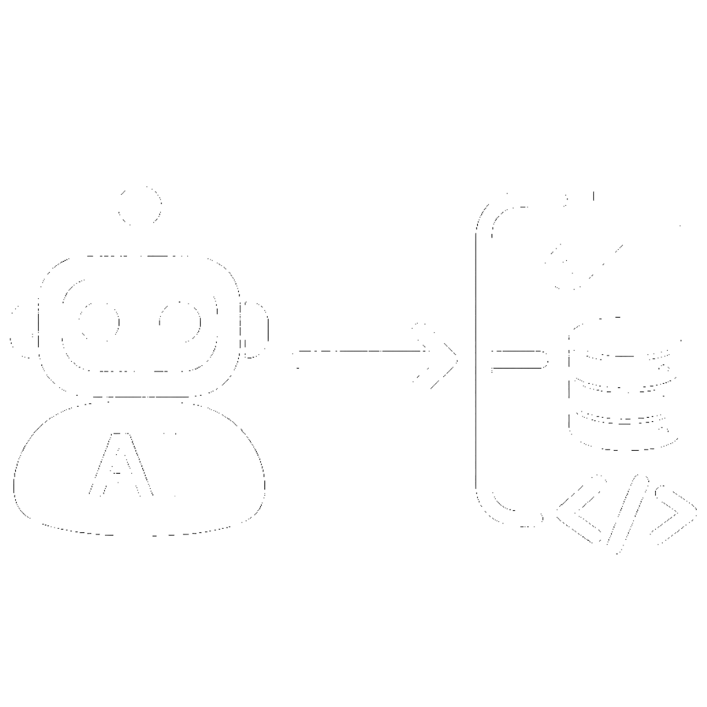
using AiContentTeam;
using AiContentTeam.Guardrails;
using AiContentTeam.Middleware;
using Microsoft.Agents.AI;
using Microsoft.Agents.AI.DevUI;
using Microsoft.Agents.AI.Hosting;
using Microsoft.Agents.AI.Workflows;
using Microsoft.Extensions.AI;
using ModelContextProtocol.Client;
var builder = WebApplication.CreateBuilder(args);
// ── IChatClient ───────────────────────────────────────────────────────────────
IChatClient chatClient = new Anthropic.AnthropicClient()
.AsIChatClient("claude-haiku-4-5");
builder.Services.AddChatClient(chatClient);
// ── MCP tools ────────────────────────────────────────────────────────────────
builder.Services.AddSingleton<IList<McpClientTool>>(sp =>
{
return Task.Run(async () =>
{
var mcpClient = await McpClient.CreateAsync(
new HttpClientTransport(new HttpClientTransportOptions
{
Endpoint = new Uri("http://localhost:2001/mcp")
}));
return await mcpClient.ListToolsAsync();
}).GetAwaiter().GetResult();
});
// ── Skills provider ───────────────────────────────────────────────────────────
#pragma warning disable MAAI001
builder.Services.AddSingleton(
new AgentSkillsProvider(Path.Combine(AppContext.BaseDirectory, "skills")));
#pragma warning restore MAAI001
// ── Guardrails ────────────────────────────────────────────────────────────────
var contentPolicy = new ContentPolicyGuardrail();
var brandSafety = new BrandSafetyGuardrail(
competitors: ["CompetitorA", "CompetitorB"],
requireCTA: true);
var outputLength = new OutputLengthGuardrail(maxChars: 3000);
// ── Agenty w DI ───────────────────────────────────────────────────────────────
builder.Services.AddKeyedSingleton<AIAgent>("Researcher", (sp, _) =>
{
var chat = sp.GetRequiredService<IChatClient>();
var mcpTools = sp.GetRequiredService<IList<McpClientTool>>();
return GuardrailFactory.WrapWithFullPipeline(
new ChatClientAgent(chat, new ChatClientAgentOptions
{
Name = "Researcher",
ChatOptions = new()
{
Instructions = """
Jesteś research agentem. Twoim JEDYNYM zadaniem jest:
1. UŻYJ NARZĘDZIA GetYouTubeTranscript aby pobrać transkrypcję z podanego URL
2. Na podstawie wyniku wyodrębnij dokładnie 5 kluczowych tez jako bullet pointy
ZASADY:
- ZAWSZE wywołuj narzędzie GetYouTubeTranscript
- Odpowiadaj po polsku
- Każdą tezę pisz w osobnej linii zaczynającej się od "• "
""",
Tools = [.. mcpTools]
}
}),
enableLogging: true,
enableRetry: true);
});
builder.Services.AddKeyedSingleton<AIAgent>("Copywriter", (sp, _) =>
{
var chat = sp.GetRequiredService<IChatClient>();
var skills = sp.GetRequiredService<AgentSkillsProvider>();
return GuardrailFactory.WrapWithFullPipeline(
new ChatClientAgent(chat, new ChatClientAgentOptions
{
Name = "Copywriter",
AIContextProviders = [skills],
ChatOptions = new()
{
Instructions = """
Jesteś copywriterem specjalizującym się w treściach dla .NET developerów.
Na podstawie tez od Researchera napisz post na LinkedIn.
ZASADY:
- 150-250 słów, max 3 emoji
- Mocny hook w 1. zdaniu
- Zakończ pytaniem do społeczności
- Napisz TYLKO treść posta, bez meta-komentarza
- Odpowiadaj po polsku
"""
}
}),
enableLogging: true,
enableRetry: true,
contentPolicy, brandSafety, outputLength);
});
builder.Services.AddKeyedSingleton<AIAgent>("Strateg", (sp, _) =>
{
var chat = sp.GetRequiredService<IChatClient>();
var skills = sp.GetRequiredService<AgentSkillsProvider>();
return GuardrailFactory.WrapWithFullPipeline(
new ChatClientAgent(chat, new ChatClientAgentOptions
{
Name = "Strateg",
AIContextProviders = [skills],
ChatOptions = new()
{
Instructions = """
Jesteś strategiem social media dla społeczności .NET developerów.
Przeanalizuj temat i odpowiedz STRUKTURALNIE:
ANALIZA TRENDÓW: [2-3 zdania]
REKOMENDOWANY HOOK: [jedno zdanie]
SUGEROWANE HASHTAGI: [max 5, format #tag]
UWAGI O ZAANGAŻOWANIU: [1-2 zdania]
Odpowiadaj po polsku.
""",
Tools = [AIFunctionFactory.Create(GetLinkedInTrends)]
}
}),
enableLogging: true,
enableRetry: true,
outputLength);
});
builder.Services.AddKeyedSingleton<AIAgent>("Redaktor", (sp, _) =>
{
var chat = sp.GetRequiredService<IChatClient>();
return GuardrailFactory.WrapWithFullPipeline(
new ChatClientAgent(chat, new ChatClientAgentOptions
{
Name = "Redaktor",
ChatOptions = new()
{
Instructions = """
Jesteś redaktorem naczelnym. Dostałeś draft i analizę strategiczną.
Zastosuj rekomendacje, popraw błędy językowe.
Napisz TYLKO finalną treść posta po polsku.
"""
}
}),
enableLogging: true,
enableRetry: true,
contentPolicy, brandSafety, outputLength);
});
// ══════════════════════════════════════════════════════════════════════════════
// content-pipeline-dev — BEZ HITL, do DevUI
// ══════════════════════════════════════════════════════════════════════════════
builder.AddWorkflow("content-pipeline-dev", (sp, key) =>
{
var chat = sp.GetRequiredService<IChatClient>();
var researcherAgent = sp.GetRequiredKeyedService<AIAgent>("Researcher");
var copywriterAgent = sp.GetRequiredKeyedService<AIAgent>("Copywriter");
var strategAgent = sp.GetRequiredKeyedService<AIAgent>("Strateg");
var redaktorAgent = sp.GetRequiredKeyedService<AIAgent>("Redaktor");
// Entry point: ChatClientAgent (DevUI wymaga tego)
var entryAgent = new ChatClientAgent(chat, new ChatClientAgentOptions
{
Name = "InputParser",
ChatOptions = new()
{
Instructions = """
Jesteś parserem inputu. Użytkownik poda URL YouTube lub temat.
Wyodrębnij URL i powtórz go dokładnie.
Jeśli nie ma URL, powtórz temat dosłownie.
Nie dodawaj żadnych komentarzy ani wyjaśnień.
Odpowiedz JEDNYM zdaniem lub samym URL-em.
"""
}
});
// Bridge: string → ResearchRequest (bo ResearcherExecutor oczekuje ResearchRequest)
var inputBridge = new InputBridgeExecutor();
// Executory
var researcher = new ResearcherExecutor(researcherAgent);
var copywriter = new CopywriterExecutor(copywriterAgent);
var strateg = new StrategExecutor(strategAgent);
var aggregator = new AggregatorExecutor();
var redaktor = new RedaktorExecutor(redaktorAgent);
var publisher = new PublishExecutor();
IEnumerable<ExecutorBinding> fanInSources = [copywriter, strateg];
// Graf: prosty, bez HITL
// W workflow zamiast:
// entryAgent → inputBridge → researcher(executor)
// Daj:
// entryAgent → researcherAgent(ChatClientAgent) → copywriter + strateg
return new WorkflowBuilder(entryAgent)
.WithName(key)
.AddEdge(entryAgent, researcherAgent) // ← sam agent, nie executor
.AddFanOutEdge(researcherAgent, [copywriterAgent, strategAgent])
.AddFanInBarrierEdge(
(IEnumerable<ExecutorBinding>)[copywriterAgent, strategAgent],
redaktorAgent)
.WithOutputFrom(redaktorAgent)
.Build();
}).AddAsAIAgent();
// ── OpenAI + DevUI ────────────────────────────────────────────────────────────
builder.Services.AddOpenAIResponses();
builder.Services.AddOpenAIConversations();
builder.Logging.SetMinimumLevel(LogLevel.Debug);
// ── Build & Map ───────────────────────────────────────────────────────────────
var app = builder.Build();
// Middleware na wyjątki — PRZED endpointami
app.Use(async (context, next) =>
{
try
{
await next();
}
catch (Exception ex)
{
Console.ForegroundColor = ConsoleColor.Red;
Console.WriteLine($"[EXCEPTION] {ex}");
Console.ResetColor();
throw;
}
});
app.MapOpenAIResponses();
app.MapOpenAIConversations();
if (app.Environment.IsDevelopment())
{
app.MapDevUI();
}
app.MapGet("/health", () => Results.Ok(new
{
status = "healthy",
pipeline = "AiContentTeam — DevUI",
devui = "/devui",
features = new[] { "No HITL (dev)", "Middleware", "Guardrails", "Fan-out/Fan-in" }
}));
// ── Start ─────────────────────────────────────────────────────────────────────
app.Urls.Add("http://localhost:5050");
Console.ForegroundColor = ConsoleColor.Cyan;
Console.WriteLine("╔════════════════════════════════════════════════════════════╗");
Console.WriteLine("║ 🚀 AiContentTeam — DevUI Server ║");
Console.WriteLine("║ ║");
Console.WriteLine("║ DevUI: http://localhost:5050/devui ║");
Console.WriteLine("║ Health: http://localhost:5050/health ║");
Console.WriteLine("║ ║");
Console.WriteLine("║ Workflow: content-pipeline-dev (no HITL) ║");
Console.WriteLine("║ ║");
Console.WriteLine("║ Pipeline: ║");
Console.WriteLine("║ InputParser → Bridge → Researcher ║");
Console.WriteLine("║ → Copywriter + Strateg (fan-out) ║");
Console.WriteLine("║ → Aggregator → Redaktor → Publisher ║");
Console.WriteLine("║ ║");
Console.WriteLine("║ Middleware: Logging, Retry, Guardrails, Function Audit ║");
Console.WriteLine("╚════════════════════════════════════════════════════════════╝");
Console.ResetColor();
app.Run();
// ── Tool helper ───────────────────────────────────────────────────────────────
[System.ComponentModel.Description("Sprawdza popularne trendy na LinkedIn w kategorii tech/AI")]
static string GetLinkedInTrends(
[System.ComponentModel.Description("Kategoria, np. 'AI', '.NET'")] string category)
{
return $"""
Top trendy w kategorii "{category}" (symulacja):
1. Microsoft Agent Framework — wysoka aktywność
2. .NET 10 Preview — umiarkowane zaangażowanie
3. Multi-agent orchestration — rosnący trend
""";
}
// ══════════════════════════════════════════════════════════════════════════════
// InputBridgeExecutor — konwertuje string z ChatClientAgent na ResearchRequest
// ══════════════════════════════════════════════════════════════════════════════
/// <summary>
/// Bridge między ChatClientAgent (zwraca string) a ResearcherExecutor (oczekuje ResearchRequest).
/// Potrzebny bo DevUI wymaga ChatClientAgent jako entry point workflow.
/// Produkcyjny Program.cs (konsolowy) nie potrzebuje tego — tam InputParserExecutor
/// jest entry pointem i bezpośrednio tworzy ResearchRequest.
/// </summary>
public partial class InputBridgeExecutor() : Executor<string, ResearchRequest>("InputBridge")
{
public override ValueTask<ResearchRequest> HandleAsync(
string message,
IWorkflowContext context,
CancellationToken cancellationToken = default)
{
Console.WriteLine($"[InputBridge] Parsing: '{message}'");
return ValueTask.FromResult(new ResearchRequest(
YouTubeUrl: message.Trim(),
TargetAudience: "polscy .NET developerzy, seniorzy i architekci"));
}
}
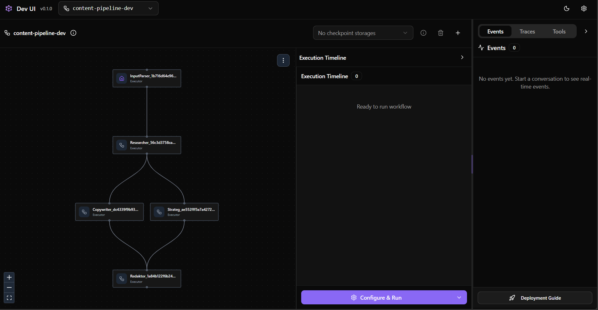
ale jeśli chcesz:
chcę widzieć przepływ procesu w jednym miejscu, bez sterowania wyjątkami i bez eventów udających kontrolę flow to już wiesz jak to zrobić